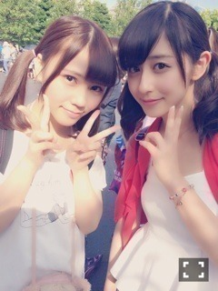

| 2014/08 11 Mon | 斎藤ちはる 真面目に！(´>∀<｀)ゝ |
ちはるーむへようこそﾟﾟ\(´O`/)°゜ﾟ

たくさんのコメントありがとうございましたﾟﾟ\(´O`/)°゜ﾟ♡
嬉しかったですﾟﾟ\(´O`/)°゜ﾟ♡♡
選抜メンバーに選ばれて、
嬉しくて自分も泣いてしまいました
って方がすごく多くて、、
私のために涙まで流してくださった方がこんなにいたなんて。。
素直に嬉しかったし、この想いを背負って頑張る使命が私にはあるなって思いました。
ひとつひとつのコメントを大事に読ませてもらって、
ひとつひとつが私の力になってます。
頑張ろう、頑張らなきゃと励みになってます。
それくらい大切で私にとって大きなものです。
本当に嬉しいです(o^^o)
頑張ります！！！！
そして選抜メンバーになってからの日々。
毎日が充実していて
とてもやりがいがあります！
毎回学ぶことがあって、
反省点もたくさん見つかって、
まだまだ他のメンバーに勝てるところが見つからないけど
追いつけ！追い越せ！
の勢いで頑張っていこうと思っています(o^^o)
ライブに関して！
私たち9thアンダーメンバーは、
アンダーライブを頑張ってきた成果が出ているね。
意識も、表現力も、技術も、ひとつ上をいってる。
っていつも褒めない、とても厳しい演出家さんが言ってくださってヽ(；；)丿
すごくすごく嬉しかったヽ(；；)丿
アンダーライブにたくさんの熱を捧げてからの、
この真夏の全国ツアー。
大きな会場で出来るからこそ込める気持ちもまた大きいんです。
アンダー、斎藤ちはるだけでなく、
選抜も含め、乃木坂46全員で創り上げるステージ。
本当にかけがえのない素敵なものにしたい。
全力で頑張ります！！
飛鳥誕生日おめでとー♡
こんなちびちゃんだった飛鳥がもう16歳になるなんてね！！！笑(｢･ω･)｢
でも中身は中々冷めてて冷静沈着だものね(｢･ω･)｢笑♡
すてきな1年にしてね♡(﹡ˆ ˆ﹡)
風には気をつけてねみなさんヽ(；；)丿
ばいるんっ
るんるんっ
ちはるんっ
(´>∀<｀)ゝ